EARLY BOOST® – уникальный источник растительного таурина, полученный из экстракта водоросли Jania Rubéns. Его косметические свойства просто невероятны! Он заряжает клетки кожи энергией, сохраняет заряд молодости, задерживает проявление первых признаков старения. Энергия — это и есть молодость. Поэтому она есть в составе BEAUTY®
SYN®-AKE* – это активный ингредиент, борющийся с морщинами, его свойства сходны со змеиным ядом. Но это не должно вас пугать. Индустрия красоты использует этот новый чудодейственный продукт для расслабления мышц лица и противодействия образованию морщин. Около 60 мышц лица заботятся о нашей мимике, и они работают на полной скорости каждый день. С 25 лет их работа начинает предательски отпечатываться на нашем лице. SYN®-AKE* предназначен для мгновенного и продолжительного расслабления мышц лица и сведения морщин к минимуму.
Gatuline® Expression – это своеобразный «природный ботокс», который мгновенно улучшает контур глаз и лица, борется с мимическими, гравитационными и возрастными морщинами. Gatuline® Expression сертифицирован как натуральный COSMOS/ECOCERT, NPA и NSF.
Какие есть средства в Beauty Natural Series?
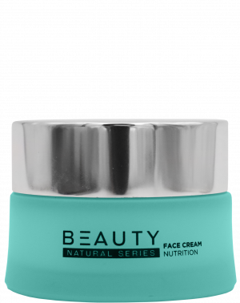
Крем для лица
Крем мягко воздействует, успокаивает, увлажняет, питает, разглаживает, делает контур лица более четким. При регулярном применении дает отличный антивозрастной эффект, воздействуя на три фактора старения кожи, связанные с генетикой, воздействием окружающей среды и образом жизни.
Преимущества:
сохраняет и увеличивает капитал молодости кожи, предлагает ей оптимальную долгосрочную защиту;
обеспечивает уплотнение кожи, восстановление и свежесть
защищает от оксидативного стресса (загрязнения воздуха)
предотвращает появление первых морщин
помогает поддерживать тургор, водный и энергетический баланс всех слоев кожи лица
имеет anti-age-эффект с накопительным действием
Крем следует наносить легкими движениями по массажным линиям утром и/или вечером на хорошо очищенные лицо и шею, дать впитаться. Через час обязательно промокнуть остатки крема сухой салфеткой.
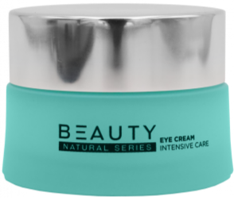
Крем для век
Крем разработан с учетом чувствительной кожи вокруг глаз, который подходит всем типам кожи. Он бережно восстанавливает упругость, придает коже вокруг глаз сияние и долговременно борется с признаками старения.
Преимущества:
разглаживает и успокаивает кожу вокруг глаз
уменьшает «гусиные лапки» и другие мимические морщинки;
обеспечивает видимый лифтинг-эффект, питание, увлажнение, anti-age-эффект с накопительным действием;
«стирает» круги и мешки под глазами, а также следы усталости;
эффективно борется с мелкими морщинками, обезвоживанием кожи и отеками под глазами;
противостоит иссушению кожи, дает ощущение комфорта и свежести.
Рекомендуем наносить крем легкими похлопывающими движениями утром и/или вечером на хорошо очищенную кожу вокруг глаз. Двигайтесь по костному краю верхнего и нижнего века от переносицы к вискам. Вечером рекомендуется наносить крем для век не позднее, чем за час до сна, чтобы крем успел поработать, пока активны ваши мышцы
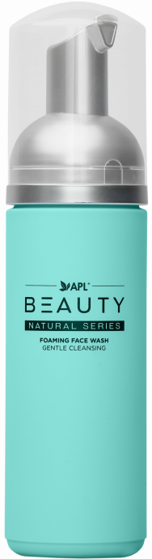
Пенка для умывания
Мягкая очищающая пена идеально удаляет весь классический макияж, глубоко проникает в поры, расслабляет кожу и обеспечивает оптимальную основу для последующего ухода.
Преимущества:
имеет воздушную, приятную текстуру, превращает процесс очищения в сплошное удовольствие
эффективно удаляет макияж и готовит кожу к последующему уходу
расслабляет кожу, борется с морщинками
идеально подходит для ежедневного применения
Нанесите на ладонь небольшое количество нежной очищающей пены (размером с грецкий орех) и равномерно распределите ее по ладоням. Затем нанесите на очищаемые участки, аккуратно помассируйте лицо. Смойте пену теплой водой.
Рекомендуется для ежедневного очищения
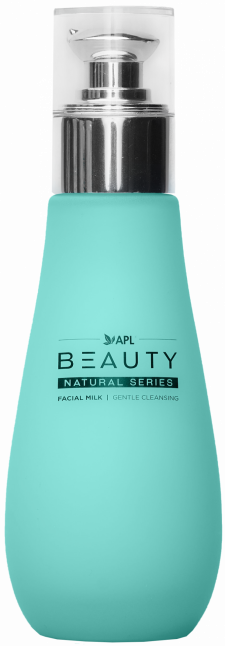
Молочко для лица
Молочко бережно удаляет макияж, наполняет кожу комфортом. Нежная очищающая кремовая эмульсия приятной консистенции не содержит агрессивных ингредиентов и уже на этапе очищения питает и увлажняет кожу.
Преимущества:
роскошная легкая текстура молочка мягко очищает чувствительную кожу, снимает макияж, удаляет грязь и жир, накопившиеся за день
средство оказывает дополнительное увлажняющее и успокаивающее действие на кожу лица и шеи
активные вещества дают коже необходимую основу для последующей программы ухода
при длительном использовании кожа выглядит свежей, молодой и здоровой
Равномерно нанесите молочко кончиками пальцев на очищаемые участки кожи. Нежно вмассируйте и протрите остатки спонжем или мягкой косметической салфеткой. После очищения рекомендуем освежить кожу тоником для лица BEAUTY®.
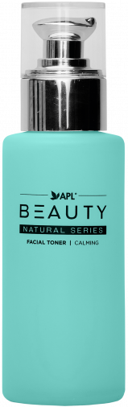
Тоник для лица
Роскошный тоник для лица с нейтрализующим и успокаивающим действием придает вашему цвету лица сияющий и свежий вид. Лосьон удаляет остатки молочка, жесткой воды, извести. Кожа чувствует себя особенно свежей.
Преимущества:
прекрасное завершение этапа очищения кожи
тоник имеет уникальную формулу и идеально подходит для чувствительной и сухой кожи (не содержит алкоголя)
кожа выглядит свежей уже после первого применения
значение pH стабилизируется быстрее после мягкого очищения
тоник подходит для компрессов для глаз
Наносите тоник ватным тампоном или кончиками пальцев на лицо и шею/декольте ежедневно после очищения. Этот этап увеличит эффективность всей серии косметики BEAUTY®
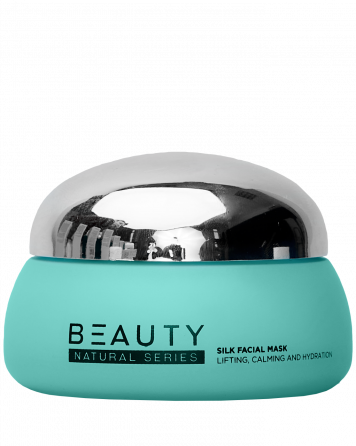
Шелковая маска для лица
Незабываемая гладкость и свежесть лица после применения маски очаровывает. Этот этап защищает кожу от окислительного стресса, обеспечивает ее биологическое равновесие, оказывает заметный антивозрастной эффект.
Преимущества:
всего за 15 минут эта маска способна сделать кожу заметно моложе благодаря ее мгновенному эффекту лифтинга
высокоэффективные вещества, содержащиеся в основе маски, обеспечивают коже необходимое увлажнение, помогают повысить естественное содержание коллагена и возвращают коже прежнюю эластичность
специальный комплекс бережно отшелушивает кожу, что гарантирует глубокое проникновение активных ингредиентов
Наносите маску после тщательного очищения или после пилинга. Распределите средство равномерно, избегая области вокруг глаз. Наслаждайтесь её шелковым прикосновением 15 минут, затем смойте теплой водой или удалите маску мягкой косметической салфеткой.
Для равномерного нанесения воспользуйтесь косметической кисточкой.
После маски мы рекомендуем нанести крем BEAUTY® для достижения максимального омолаживающего эффекта.
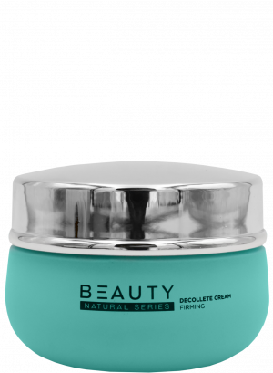
Крем для зоны декольте
Свежая и чувственная текстура крема тает на коже и быстро впитывается, оставляя после себя ощущение гладкости и упругости зоны декольте.
Преимущества:
крем обладает push-up-эффектом
был разработан специально для шеи и декольте
подтягивает кожу шеи и груди изнутри, разглаживает морщины и сохраняет молодость и упругость бюста
отлично увлажняет
предотвращает появление морщин
усиливает защитный барьер кожи
подтягивает контуры
Равномерно нанесите достаточное количество питательного крема на тщательно очищенную зону декольте, шею и бюст мягкими массирующими движениями.
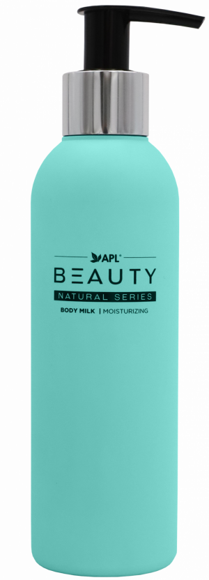
Молочко для тела
Молочко быстро впитывается в кожные покровы, не забивая поры и не оставляя на теле жирную пленку. Восстанавливает упругость кожи тела, делает кожу шелковистой, защищает от клеточного старения и увядания.
Преимущества:
способствует выработке собственного эластина и коллагена
обладает эффектом регенерации, благодаря которому тело чувствует себя обновленным
обеспечивает:
питание
увлажнение
уплотнение
упругость и мягкость
заживление ранок и царапин
защиту от оксидативного стресса (UV-лучи, загрязнение воздуха)
Наносить утром и/или вечером легкими круговыми движениями на хорошо очищенную кожу, дать впитаться.
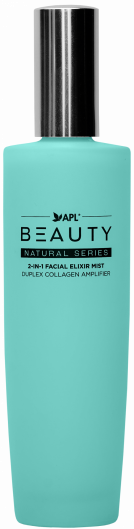
2 в 1 спрей-эликсир для лица
Освежающий спрей для лица богат высокоэффективными компонентами и питательными веществами. Он способен заметно изменить внешний вид кожи, увлажнить её, придать сияние и усилить выработку коллагена.
Преимущества:
один «пшик» защитит кожу от вредного воздействия окружающей среды
спрей очень эффективен, он обволакивает кожу невидимой защитной пленкой и таким образом предотвращает проникновение свободных радикалов, смога и вредных веществ
нежно воздействует на кожу
снабжает кожу гиалуроном
приятный “удар” свежести в сухих помещениях и в жаркие летние дни
укрепляет и фиксирует макияж
Распылите эликсир на кожу лица, шеи и декольте перед выходом из дома или просто когда вам захочется свежести и сияния.
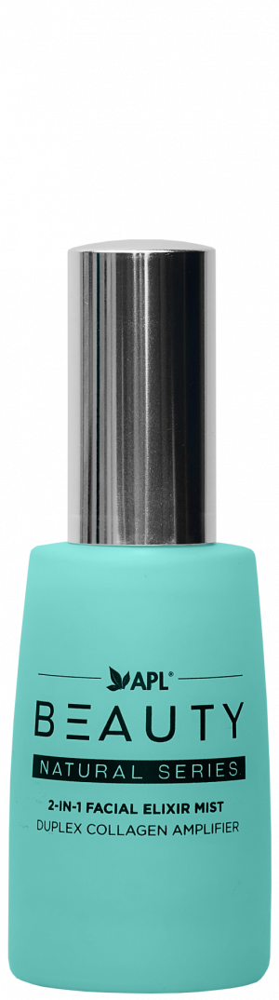
2 в 1 спрей-эликсир для лица (30 мл)
Travel-формат освежающего спрея для лица богат высокоэффективными компонентами и питательными веществами. Он способен заметно изменить внешний вид кожи, увлажнить её, придать сияние и усилить выработку коллагена.
Преимущества:
удобный формат, который удобно взять с собой
один «пшик» защитит кожу от вредного воздействия окружающей среды
спрей очень эффективен, он обволакивает кожу невидимой защитной пленкой и таким образом предотвращает проникновение свободных радикалов, смога и вредных веществ
нежно воздействует на кожу
снабжает кожу гиалуроном
приятный “удар” свежести в сухих помещениях и в жаркие летние дни
укрепляет и фиксирует макияж
Распылите эликсир на кожу лица, шеи и декольте перед выходом из дома или просто когда вам захочется свежести и сияния.
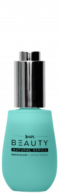
Магический сывороточный эликсир
Магический сывороточный эликсир BEAUTY® – это гибрид сыворотки и эмульсии для быстрых и интенсивных процедур ухода. Он эффективен, как сыворотка, легкий, как эмульсия, комфортный, как крем. Связывает влагу во всех слоях кожи, восстанавливает межклеточный цемент.
Сыворотка «выталкивает морщины» и создает внутренний каркас кожи, обеспечивает мощный антивозрастной эффект, укрепляя внеклеточный матрикс и воздействуя на все структуры кожи.
Преимущества:
рекомендуется для всех типов кожи, идеально подходит для ухода за чувствительной, склонной к покраснению кожей
запатентованные активные ингредиенты быстро разглаживают существующие мимические морщины, подтягивают обвисшие контуры лица
эффективно влияет на уставшую, дряблую кожу
сывороточный эликсир обладает успокаивающим и противовоспалительным эффектом, который может быть особенно полезен для раздраженной и уставшей кожи
обеспечивает видимый лифтинг-эффект
Тщательно очистите кожу пенкой и очищающим молочком BEAUTY®. Обработайте кожу тоником, чтобы стабилизировать pH-уровень кожи. И пока кожа еще влажная, нанесите небольшое количество сывороточного эликсира на лицо строго по массажным линиям. Подождите немного, пока средство впитается. После этого можно наносить крем или макияж.